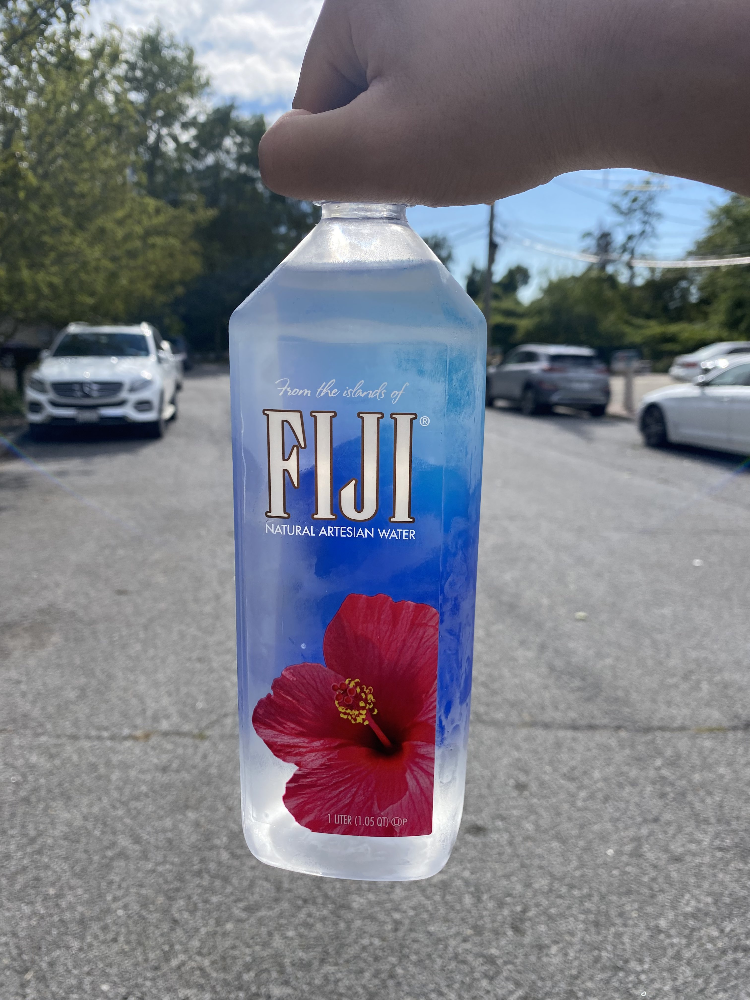
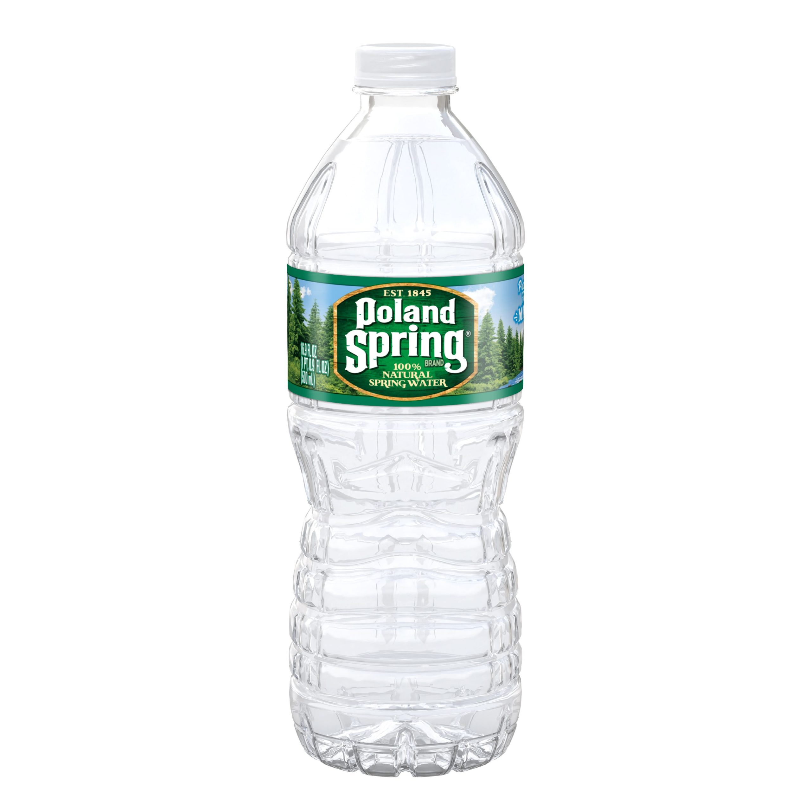

Bottled waters from different sources have different health benefits and tastes. Unfortunately,
I've only tried a limited
number of bottled water brands in my lifetime so far but here's a review of the ones I have
tried.
Fiji Water

Here's my favorite bottled water brand. It costed me $3 but as a self-proclaimed water connoisseur, I think
it was worth it. Compared to all the other bottled water brands I've tried, it tastes the best and it also
has the best
mineral contents. It has magnesium, calcium, potassium, silica, sodium, bicarbonate, and other healthy
minerals and also tastes better than the rest of the bottled waters so it gets ranked first.
Here's a link to buy some Fiji water
Evian Water

Evian water gets ranked second because although it also has a lot of healthy minerals, (calcium, magnesium,
potassium, silica
bicarbonates, sulfates, and chlorides) it's quite hard to drink evian water because of the high mineral
content.
Drinking evian water feels like drinking salt water and it even has a milky texture because of the high
amounts of calcium in it. It's
still a pretty good option if you need to replenish your minerals.
Here's a link to buy some Evian water
Poland Spring

Poland Spring is the classic go to option that's affordable and keeps you hydrated, but it doesn't have
as many minerals
as Evian or Fiji water does. Nonetheless, it still does its job and tastes ok.
Here's a link to buy some Poland Spring water